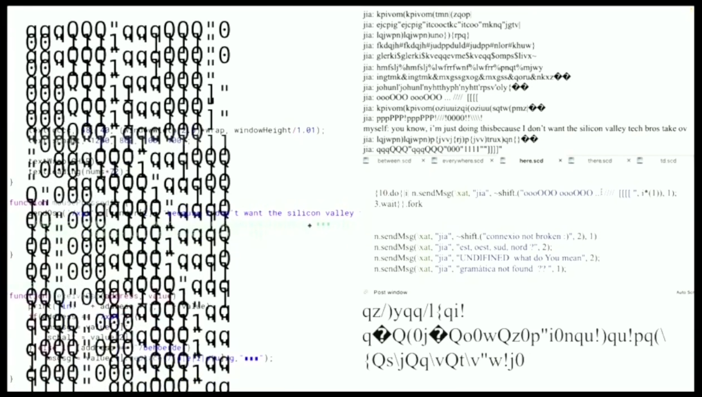
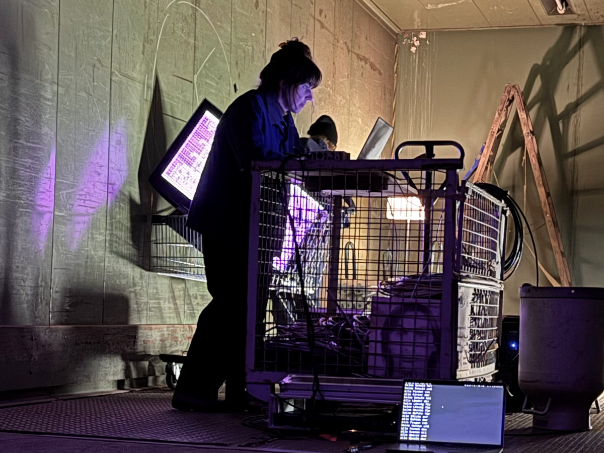
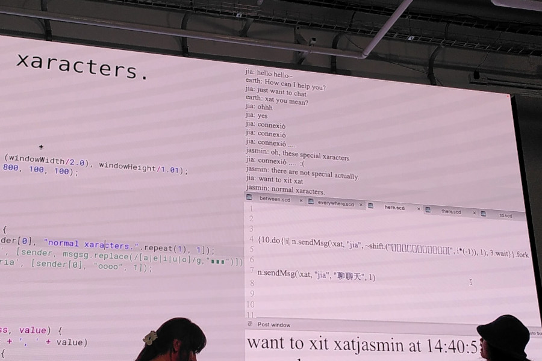
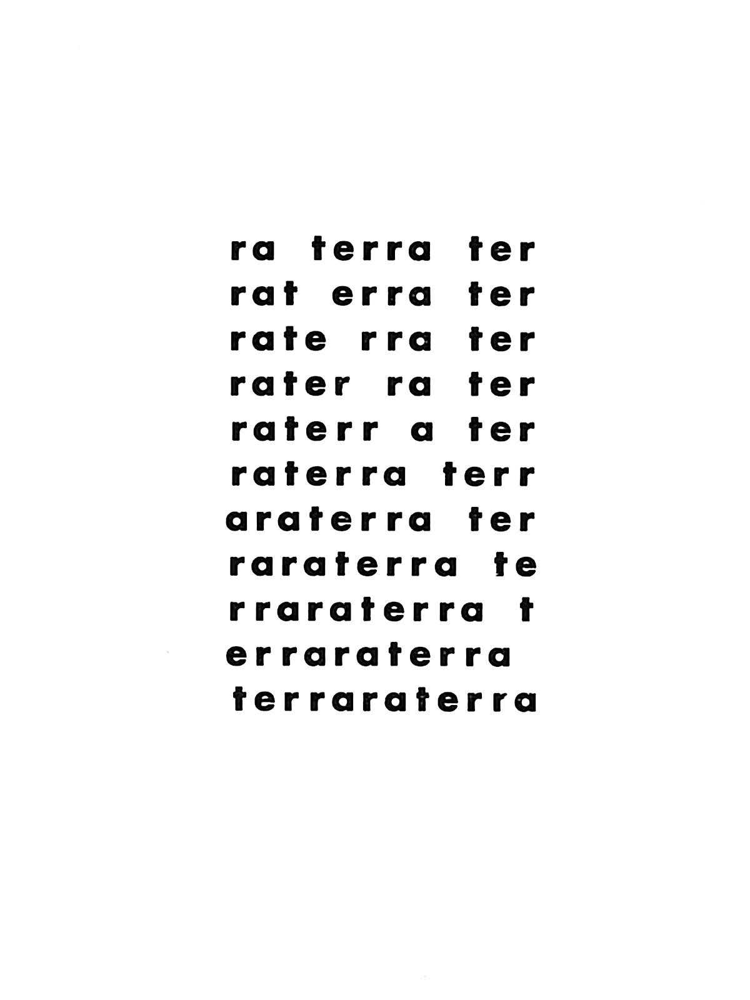
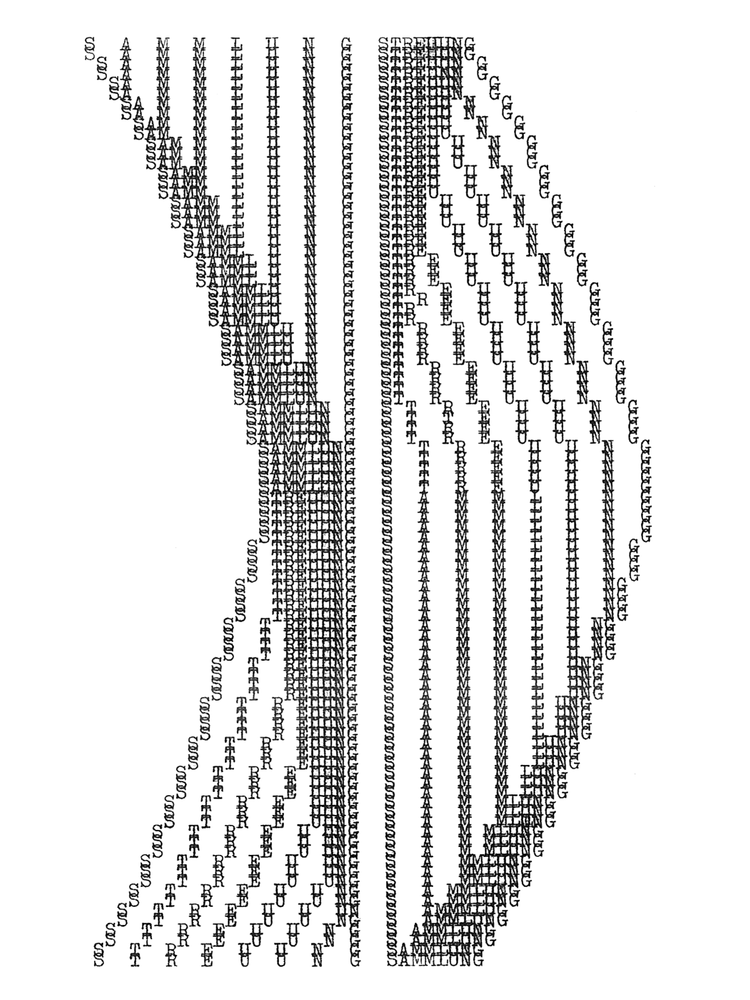
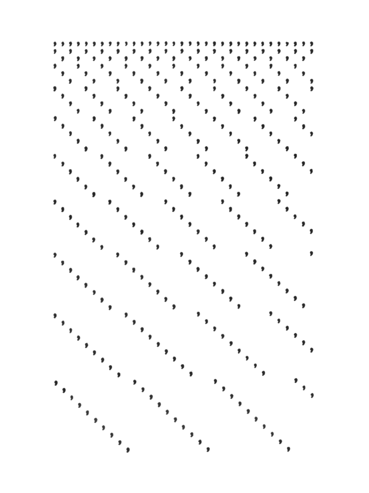

Workshop — May 7, 2026
+Colabor — Creative Coding — HSLU Luzern
Jasmin Meerhoff — nervousdata.com

Techno-Poetics, Experimental Poetry and Sound, Media History & Philosophy, …
Engage with the ways how the tools I use and how technology in general came into being.
Code: codeberg.org/nervousdata/ — Codeberg (non-profit, community-led), based in Berlin
A sentence being written and re-written on screen in P5LIVE. Sentence taken from Charles Babbage On the Economy of Machinery and Manufactures.

Sound Poetry. Live-loop, Cut-Up and effects with TidalCycles.

A message-based performance and custom chat-system. Two laptops (one running SuperCollider, one running P5LIVE) are connected via the OSC protocol.
FromScratch at /* VIU */ Festival Barcelona, 2026
Starting with a (mostly) blank screen. The format in Barcelona derived from the one in Mexico City. 9 minutes — no need to prepare a long set.
“the cardinal rule for our audience: All attendees must applaud at the end of nine minutes (remember that this is for fun). With applause guaranteed and errors not only accepted but appreciated, the FromScratch format lends itself as an ideal meetup activity for people with any level of live coding experience.”
What kind of aesthetics produce this practice?
A poem in which layout and typography, and an emphasis of the visual and phonetic qualities of words and letters constitute its meaning.
Evolved internationally in the 1960s, with lots of artists from Latin America and the former Soviet Union.



Inspired by early Concrete Poetry works
text("live", 10, 10, windowWidth, windowHeight);
let me = "you ";
textFont('monospace');
textSize(32);
textStyle(NORMAL);
textAlign(LEFT);
textWrap(CHAR);
textLeading(32);
text(me, 10, 10, windowWidth, windowHeight);
textSize(32) – values in pixel
textAlign(LEFT) – LEFT, RIGHT or CENTER
textFont("monospace") – font name or generic family
textLeading(32) – values in pixel
textWrap(CHAR) – WORD or CHAR
textStyle(NORMAL) – NORMAL, ITALIC, BOLD or BOLDITALIC